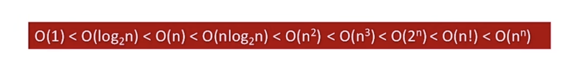

绪论
数据结构的基本概念
什么是数据
数据是 信息的载体 ，是描述客观事物属性的数、字符及所有能输入到计算中，并 被计算机程序识别和处理 的符号的集合，数据是计算机程序加工的原料。
数据元素，通过作为一个整体进行考虑和处理。
一个数据元素可以由若干:red:数据项组成，数据项是构成数据元素的不可分割的最小单位
数据对象是具有 :red:`相同性质`的数据元素的集合，是数据的一个子集。
数据结构是相互之间存在一种或多种特定:red:`关系`的数据元素的集合
数据的三要素

集合结构： 数据元素是无关系的
线性结构： 数据元素是一对一的关系。
树形结构： 数据元素是一对多的关系。
图结构： 数据元素是多对多的关系
数据的运算
针对某种逻辑结构，结合实际需求，定义:red:基本运算
物理结构
数据的物理结构就是存储结构，就是如何用计算机表示数据的逻辑关系
顺序存储： 逻辑顺序相邻的元素存储在物理上相邻位置。
链式存储： 逻辑上相邻的元素在存储物理上可以不相邻。
索引存储： 存储元素信息的基础上，额外建立附加的索引表。
散列存储： 根据元素的关键字直接计算出该元素的存储地址。
若采用顺序存储，各个元素在物理上必须是连续的， 若采用非顺序存储，在物理上是可以离线的。
数据的存储结构会影响分配的方便程度和对数据的运算速度。
数据类型
数据类型是一个*值的集合*和定义在此集合上的*一组操作*的总称。
原子类型
结构类型
抽象数据类型ADT是抽象数据*组织*及与之相关的*操作*。
算法
什么是算法
程序 = 程序数据 + 算法
算法是对特定问题求解:red:步骤的一种描述，它是指令的有序序列，其中每条指令表示一个或多个操作。
算法的特性
有穷性： 一个算法必须总在执行*有穷步数*之后结束，每一步*有穷时间*内完成。
确定性： 算法指令明确，相同的输入*只能得到*相同的输出。
可行性： 算法描述的操作，都可以通过已经实现的基本预算执行有限次。
输入： 一个算法有`>=0`个输入，
输出： `>=1`个输出。
好算法的特质
正确性： 正确无误的
可读性： 帮助人理解
健壮性： 非法数据，能正确处理，不会产生莫名其妙的输出结果
高效率： 时间少
低存储： 存储占用少
算法效率的度量
如何评估算法时间开销
事后统计：
事前预估： 时间开销Tn与问题规模n的关系
常见复杂度对比
尝对蜜汁鸡
最坏时间复杂度： 最坏情况下，算法的时间复杂度。
平均时间复杂度： 所有输入均等概率的情况下，算法期望运行时间。
如何评估算法空间开销
空间开销与问题规模n的关系。